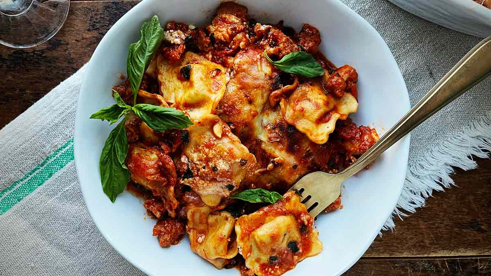

Italian Ravioli Lasagna Recipe
Home

Description
Layers of tender Italian ravioli baked with rich marinara, seasoned ground beef, creamy ricotta, melted mozzarella, and Parmesan for a comforting twist on classic lasagna.
Ingredients
- Cooking Spray
- 44 Ounces Frozen Cheese Ravioli
- 2 (24 Ounce) Jars Marinara Sauce
- 1 Pound Ground Italian Sausage
- 1/4 Cup Water, Divided, Or More If Needed
- 2 Cups Shredded Italian Blend Cheese
- 1/2 Teaspoon Italian Seasoning
Directions
- Set ravioli on the counter
- Preheat the oven to 400 degrees F (200 degrees C). Spray a 9x13-inch baking pan with cooking spray. Spread 1 cup of marinara sauce into the bottom of the baking pan.
- Spray a large skillet with cooking spray, and cook the Italian sausage over medium-high heat until browned, crumbling the meat as it cooks, about 5 minutes. Reduce heat to medium and drain grease.
- Add remaining marinara sauce to the skillet. Add a little water to each jar and shake to get out the last of the sauce. Add to the skillet and bring sauce and meat to a simmer for 5 to 10 minutes. Remove from heat.
- Place ravioli in a single layer in the prepared 9x13-inch pan, flat side down, overlapping if needed. Cover ravioli with 1 1/2 to 2 cups meat sauce and then 1/2 cup cheese. Repeat, adding another layer of ravioli, meat sauce, and cheese.
- Top with remaining meat sauce and cheese and sprinkle Italian seasoning on top. Loosely cover with aluminum foil.
- Bake, covered, in the preheated oven for 30 minutes. Uncover and bake until hot and bubbly, about 20 minutes more.
- If desired, turn on the oven's broiler, and broil to brown the topping, 2 to 3 minutes. Let stand for 10 minutes before serving.